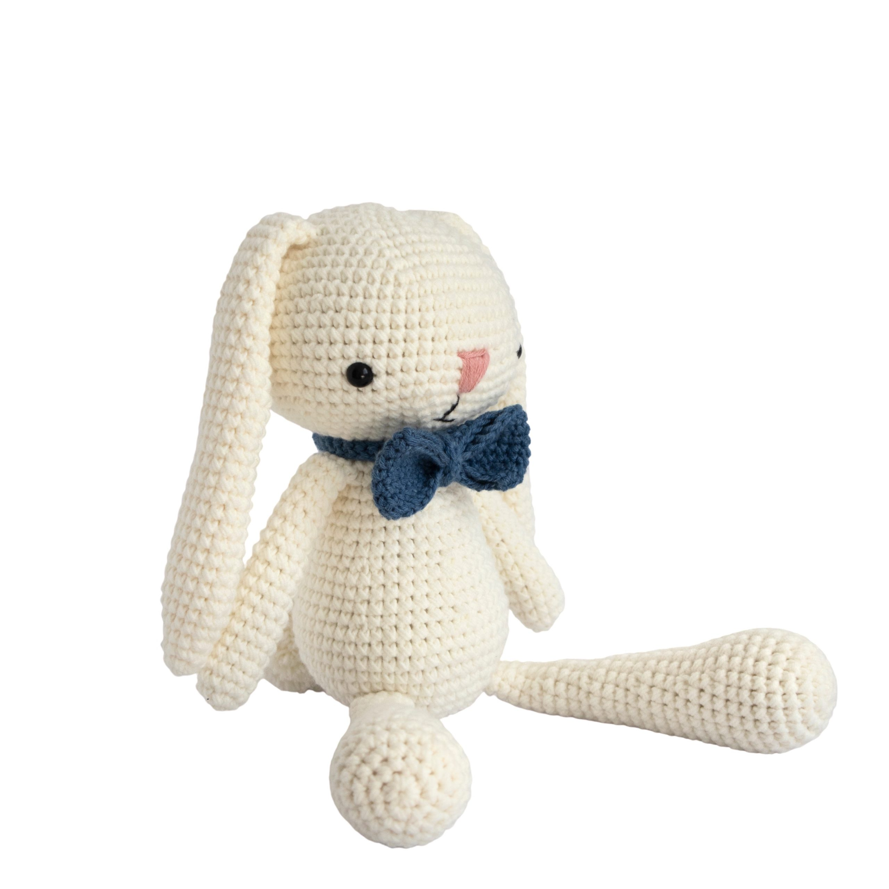
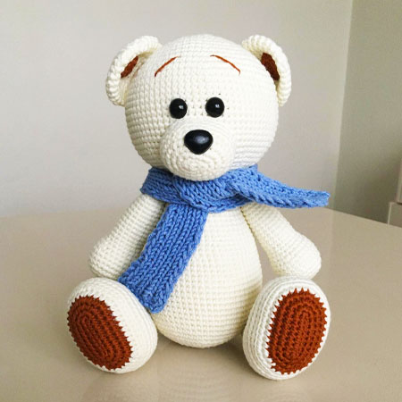
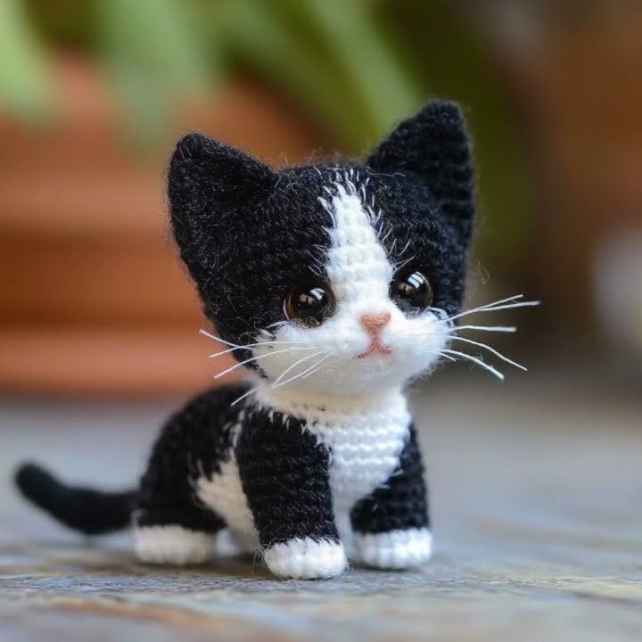
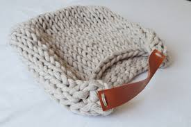

Descubre los materiales que usamos para dar vida a cada amigurumi.
El hilo es el material principal de cada pieza. En Sueños Tejidos usamos hilos suaves, de buena calidad y con colores sólidos que no pierden intensidad con el tiempo. La elección del hilo varía según la pieza; su grosor y textura determinan el acabado final y el nivel de detalle que se puede lograr.
La aguja es la herramienta que convierte el hilo en forma. Cada tamaño de aguja se elige en función del hilo que se usa, y dominar esa relación es parte del oficio. Es un instrumento simple, pero en las manos correctas es capaz de crear piezas con una precisión y un detalle sorprendentes.
Dentro de cada amigurumi hay un relleno de fibra que le da cuerpo, volumen y esa suavidad característica al tacto. La cantidad de relleno también define la firmeza de la pieza y encontrar el punto justo es uno de los detalles que marcan la diferencia en el resultado final.
Los ojos, botones y pequeños detalles son los que le dan personalidad a cada figura. Son el último paso del proceso y, muchas veces, el más importante porque es ahí donde el amigurumi deja de ser una figura de lana y empieza a parecerse a alguien.

Hecho a mano con hilo suave y relleno de fibra. Ideal para regalar.

Detalle minucioso en ojos y accesorios. Perfecto para coleccionar.

Pequeño y adorable, ideal para decorar o regalar a alguien especial.

Bolsos tejidos a mano, con diseños únicos y colores vivos. Perfectos para regalar o complementar tu estilo.